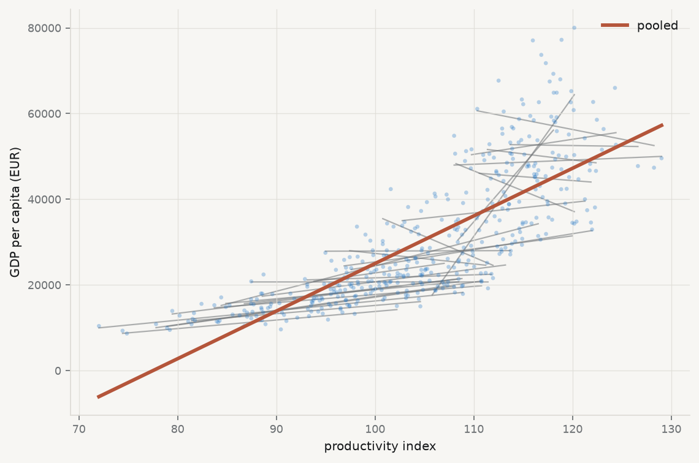

Chapters 2 and 3 fitted a single line to thirty countries observed over fifteen years, and reported one slope. That slope was an answer to a question nobody had asked precisely: whose relationship is it? The relationship between productivity and income across countries at a moment in time, or the relationship within a country as it changes over time, are different questions with different answers, and pooling them produces a number that is neither.
Start by asking whether there is one relationship at all.
Show the code
import sys, warningssys.path.insert(0, "../slides"); sys.path.insert(0, "..")warnings.filterwarnings("ignore")from plotstyle import setup, CLplt = setup()import numpy as np, pandas as pd, statsmodels.api as sm, qmibcore = (qmib.load("core").dropna(subset=["gdp_pc_eur", "productivity_idx"]) .reset_index(drop=True))y, x ="gdp_pc_eur", "productivity_idx"pooled = sm.OLS(core[y], sm.add_constant(core[[x]])).fit()fig, ax = plt.subplots(figsize=(7.2, 4.8))slopes = {}for geo, g in core.groupby("geo"):iflen(g) <4:continue b = np.polyfit(g[x], g[y], 1) slopes[geo] = b[0] gx = np.linspace(g[x].min(), g[x].max(), 20) ax.plot(gx, np.polyval(b, gx), lw=1.0, color=CL.muted, alpha=0.55, zorder=1)gx = np.linspace(core[x].min(), core[x].max(), 50)ax.plot(gx, pooled.params.iloc[0] + pooled.params.iloc[1] * gx, lw=2.6, color=CL.warn, zorder=3, label="pooled")ax.scatter(core[x], core[y], s=9, color=CL.accent, alpha=0.30, edgecolor="none", zorder=2)ax.set_xlabel("productivity index"); ax.set_ylabel("GDP per capita (EUR)")ax.legend(frameon=False, fontsize=9)fig.tight_layout()s = pd.Series(slopes)print(f"pooled slope {pooled.params.iloc[1]:>10,.0f}")print(f"country slopes: min {s.min():>10,.0f} median {s.median():>10,.0f} max {s.max():>10,.0f}")print(f"negative in {(s <0).sum()} of {len(s)} countries")
pooled slope 1,111
country slopes: min -975 median 219 max 3,247
negative in 8 of 30 countries

Figure 6.1: One line per country, fitted separately, against the single pooled line in red. The pooled slope is not a summary of the country slopes — it is mostly a comparison between countries.
The picture is the chapter. A single steep line rises through a cloud of much flatter, and in eight cases downward-sloping, country lines. The pooled slope is not an average of the country slopes; it is dominated by the fact that countries with high productivity are countries with high income — a comparison between countries, not a description of what happens within one.
Whether that is the quantity you want depends entirely on the claim you intend to make. If the claim is “countries with higher productivity are richer”, the pooled estimate is the right object. If the claim is “raising productivity raises income”, it is close to useless, because the second claim is about movement within a country and the first estimate contains almost none of it.
6.2 Where the variation lives
The reason is arithmetic, and it can be inspected before any model is fitted. Total variation in a panel variable splits into variation between units and variation within them, and a regression uses whichever is left after the controls have absorbed the rest.
Run it: between and within variation
core["log_gdp"] = np.log(core[y])print(f"{'variable':20}{'total var':>12}{'within':>10}{'between':>10}")for c in [x, "log_gdp"]: tot = core[c].var(ddof=1) within = (core[c] - core.groupby("geo")[c].transform("mean")).var(ddof=1)print(f"{c:20}{tot:12.4f}{within/tot:9.1%}{1- within/tot:10.1%}")print("\nmean annual drift:")for c in [x, "log_gdp"]:print(f" {c:20}{np.polyfit(core['time'], core[c], 1)[0]:+10.4f} per year")
variable total var within between
productivity_idx 119.5167 29.6% 70.4%
log_gdp 0.2484 13.9% 86.1%
mean annual drift:
productivity_idx +0.9671 per year
log_gdp -0.0076 per year
Two facts from that output govern everything below. The great majority of the variation in both variables is between countries — 70% for productivity, 86% for log income — so a pooled regression is overwhelmingly a cross-sectional comparison wearing panel clothing. And productivity drifts upward by about one index point a year while log income does not drift at all, which means the within-country variation in the predictor is substantially a common trend that the outcome does not share.
6.3 Fixed effects: the within transformation
The standard response is to give each country its own intercept:
The \(\alpha_i\) absorb everything about a country that does not change over the sample — institutions, geography, legal tradition, whatever is durable — whether or not you can measure it or even name it. That is the appeal, and it is a large one: an unmeasured confounder that is constant within a country cannot bias \(\hat\beta\), because it has been differenced away.
There are three equivalent ways to compute it, and their equivalence is Frisch–Waugh–Lovell from chapter 2 in a new costume. Include a dummy for each country. Or subtract each country’s mean from each variable and regress the demeaned outcome on the demeaned predictor. Or partial the dummies out of both sides and regress residual on residual. All three are the same estimator.
Run it: fixed effects, three ways, one number
# (a) demeaning — the "within" transformationdm = core.copy()for c in [y, x]: dm[c +"_w"] = dm[c] - dm.groupby("geo")[c].transform("mean")within = sm.OLS(dm[y +"_w"], dm[[x +"_w"]]).fit()# (b) a dummy for every countrygeo_d = pd.get_dummies(core["geo"], drop_first=True, dtype=float)dummies = sm.OLS(core[y], sm.add_constant(pd.concat([core[[x]], geo_d], axis=1))).fit()# (c) a purpose-built panel estimatorfrom linearmodels.panel import PanelOLSpanel = core.set_index(["geo", "time"])fe = PanelOLS(panel[y], sm.add_constant(panel[[x]]), entity_effects=True).fit()print(f"pooled {pooled.params.iloc[1]:>12,.2f}")print(f"within, by demeaning {within.params.iloc[0]:>12,.2f}")print(f"within, by country dummies {dummies.params[x]:>12,.2f}")print(f"within, by PanelOLS {fe.params[x]:>12,.2f}")print(f"\nthe pooled slope is {pooled.params.iloc[1]/fe.params[x]:.1f}x the within slope")
pooled 1,111.26
within, by demeaning 274.59
within, by country dummies 274.59
within, by PanelOLS 274.59
the pooled slope is 4.0x the within slope
The three agree exactly, and the pooled slope is four times the within slope. That gap is the quantitative version of the picture above: three quarters of the pooled estimate was between-country comparison, and it disappears the moment each country is allowed its own level.
6.4 What fixed effects throws away, and what it cannot fix
Fixed effects are not free, and the costs are systematically undersold.
Anything constant within a unit becomes inestimable. A country’s legal origin, its language, its distance from the equator — all absorbed, none estimable. If the effect you care about is a time-invariant characteristic, fixed effects delete your research question rather than answering it.
The estimator uses only within variation, so precision falls. Here that is 70% of the variation in the predictor discarded. If the within variation is small or badly measured, fixed effects trade bias for a great deal of variance — and measurement error is amplified by demeaning, because differencing removes signal while leaving noise.
Time-varying confounders survive untouched. The reassurance that “fixed effects control for unobserved heterogeneity” holds only for heterogeneity that does not move. Anything that changes within a country over the sample period — a reform, a business cycle, a shock — passes straight through.
6.5 Two countries’ worth of dummies, and a puzzle
Time shocks are the obvious example of a confounder that fixed effects do not remove. A recession that hits every country at once creates common movement in both variables that has nothing to do with the relationship of interest. The remedy is a second set of dummies, one per year:
The identifying variation is now what remains after both country means and year means have been removed — the purely idiosyncratic part of each observation.
Run it: add year effects, and look at what happens
two = PanelOLS(panel[y], sm.add_constant(panel[[x]]), entity_effects=True, time_effects=True).fit()print(f"{'specification':32}{'slope':>12}")print(f"{'pooled':32}{pooled.params.iloc[1]:>12,.2f}")print(f"{'country effects':32}{fe.params[x]:>12,.2f}")print(f"{'country + year effects':32}{two.params[x]:>12,.2f}")
specification slope
pooled 1,111.26
country effects 274.59
country + year effects 1,149.28
That is not a typographical error, and it is not a bug — a design matrix built by hand with 45 columns of full rank returns the same number. Adding year effects moves the slope from 275 back up past the pooled estimate, to about 1,149. Three defensible specifications give answers spanning a factor of four, and a reader shown any one of them alone would draw a different conclusion.
The explanation is available here in a way it almost never is in real work, because these are fixtures and the generator is in the repository. Productivity was constructed with a deterministic trend of \(+1.15\) index points per year; income was not given one. So the within-country variation in the predictor is dominated by a common upward drift that the outcome does not share — variation in \(x\) with no matching variation in \(y\), which attenuates the slope toward zero. That is the 275. Year effects remove precisely that common drift, along with the COVID shock the generator applied to both. What is left is idiosyncratic country-year movement, in which the same latent factor drives both variables strongly — and the slope comes back up.
The general lesson survives the specific example. Each specification identifies \(\beta\) from a different slice of the variation, and if the slices carry different signal-to-noise ratios the estimates will differ — not because one is wrong, but because they are answering different questions. Reporting a specification without saying which variation identifies it is reporting half a result. This is also why the modern literature is careful about two-way fixed effects when effects are heterogeneous: the estimator is a weighted average of many comparisons, and the weights are not always the ones you would choose (Chaisemartin and D’Haultfœuille 2020).
6.6 Random effects, and why the choice is testable
The alternative treats the unit effects as draws from a distribution rather than as parameters:
This is more efficient when it is true, because it uses between as well as within variation, and it keeps time-invariant regressors estimable. It buys that with a strong assumption: \(u_i\) must be uncorrelated with the regressors. If countries with high unobserved capacity also have high productivity — which is exactly what the fixture’s four country types encode — the assumption fails and random effects are biased.
The comparison is testable, because fixed effects are consistent whether or not the assumption holds while random effects are consistent only if it does. A systematic difference between the two therefore indicts the assumption (Hausman 1978). Mundlak’s reformulation is the more illuminating one: include each unit’s mean of the regressors alongside the regressors themselves, and the coefficient on the mean tests exactly the correlation at issue — turning the specification test into a coefficient you can look at (Mundlak 1978).
Run it: Mundlak’s version of the specification test
from linearmodels.panel import RandomEffectsre_fit = RandomEffects(panel[y], sm.add_constant(panel[[x]])).fit()print(f"random effects slope {re_fit.params[x]:>12,.2f}")print(f"fixed effects slope {fe.params[x]:>12,.2f}")# Mundlak: add the country mean of x to a pooled regression.aug = core.copy()aug["x_mean"] = aug.groupby("geo")[x].transform("mean")mund = sm.OLS(aug[y], sm.add_constant(aug[[x, "x_mean"]])).fit( cov_type="cluster", cov_kwds={"groups": aug["geo"]})print(f"\nMundlak regression (clustered by country):")print(f" within coefficient on {x:18}{mund.params[x]:>12,.2f}")print(f" coefficient on the country mean {mund.params['x_mean']:>12,.2f}"f" p = {mund.pvalues['x_mean']:.4f}")print("\nA country mean that matters is a unit effect correlated with the")print("regressor — which is the random-effects assumption failing.")
random effects slope 817.47
fixed effects slope 274.59
Mundlak regression (clustered by country):
within coefficient on productivity_idx 274.59
coefficient on the country mean 1,187.89 p = 0.0000
A country mean that matters is a unit effect correlated with the
regressor — which is the random-effects assumption failing.
6.7 Clustered standard errors, properly this time
Chapter 3 showed that clustering by country raised the standard error on the pooled slope by about three quarters, and deferred the explanation. Here it is.
The classical formula assumes each of the 428 rows contributes independent information. It does not: residuals within a country are strongly correlated, so thirty countries observed fifteen times carry far less information than 450 independent observations would. The cluster-robust estimator replaces the independence assumption with independence between clusters, allowing arbitrary correlation within:
The sandwich is the same shape as chapter 3’s White estimator; only the middle changes, from a sum over observations to a sum over groups.
Run it: the same coefficient, five uncertainties
print(f"{'standard errors':34}{'SE':>10}{'t':>8}{'95% CI half-width':>20}")variants = [ ("classical", dict()), ("HC3 (heteroscedasticity only)", dict(cov_type="HC3")), ("clustered by country (30)", dict(cov_type="cluster", cov_kwds={"groups": core["geo"]})), ("clustered by year (15)", dict(cov_type="cluster", cov_kwds={"groups": core["time"]})),# statsmodels needs numeric group codes for two-way clustering. ("two-way clustered", dict(cov_type="cluster", cov_kwds={"groups": np.column_stack([ pd.factorize(core["geo"])[0], pd.factorize(core["time"])[0]])})),]for label, kw in variants: f = sm.OLS(core[y], sm.add_constant(core[[x]])).fit(**kw) b, se = f.params.iloc[1], f.bse.iloc[1]print(f"{label:34}{se:10.2f}{b/se:8.2f}{1.96*se:20,.0f}")
standard errors SE t 95% CI half-width
classical 41.50 26.77 81
HC3 (heteroscedasticity only) 43.24 25.70 85
clustered by country (30) 72.30 15.37 142
clustered by year (15) 74.28 14.96 146
two-way clustered 94.34 11.78 185
Three points of discipline. Cluster at the level at which shocks arrive, not at the level that gives the answer you prefer — and if you are unsure, the question is about the sampling process rather than the data (Abadie et al. 2022). The number of clusters is what matters, not the number of observations: with thirty countries the asymptotics are thin, and with fewer than about forty clusters the cluster-robust estimator understates uncertainty and a bootstrap is the better tool. And clustering is not a fix for a misspecified model — it widens the interval around whatever the specification estimates, correct or not.
6.8 Does the slope differ by group? Ask it directly
Heterogeneity can be modelled rather than absorbed. An interaction lets the slope itself vary:
where \(g_i\) marks a group. The coefficient \(\delta\)is the difference in slopes, so its standard error is the test — which is the right way to compare two groups, rather than fitting separately and eyeballing whether intervals overlap, an error chapter 2 warned about.
Run it: is the relationship the same in high- and low-income countries?
med = core.groupby("geo")[y].mean().median()core["rich"] = (core.groupby("geo")[y].transform("mean") > med).astype(float)core["x_rich"] = core[x] * core["rich"]inter = sm.OLS(core[y], sm.add_constant(core[[x, "rich", "x_rich"]])).fit( cov_type="cluster", cov_kwds={"groups": core["geo"]})print(f"slope in lower-income countries {inter.params[x]:>12,.2f}")print(f"difference in slope (interaction) {inter.params['x_rich']:>12,.2f}"f" p = {inter.pvalues['x_rich']:.4f}")print(f"slope in higher-income countries "f"{inter.params[x] + inter.params['x_rich']:>12,.2f}")print("\nThe interaction coefficient is the difference, so its p-value tests")print("the difference — which is the comparison you actually wanted.")
slope in lower-income countries 450.95
difference in slope (interaction) 789.93 p = 0.0000
slope in higher-income countries 1,240.88
The interaction coefficient is the difference, so its p-value tests
the difference — which is the comparison you actually wanted.
6.9 Yule’s warning, which predates all of this
From the archive · Yule, 1903
Long before panel data existed, George Udny Yule showed that an association present in every subgroup of a table can vanish or reverse when the subgroups are combined, purely as an artefact of how the groups differ in size and composition (Yule 1903). Simpson revisited it half a century later, and the phenomenon carries his name in most textbooks and Yule’s in the careful ones (Simpson 1951).
The eight countries with negative slopes in the opening figure are the same phenomenon in continuous form. A relationship that is negative within most units and strongly positive across them is not a contradiction and not a paradox — it is two different quantities, and the aggregate one is a weighted comparison between units that happens to run the other way.
The lesson is not that the aggregate is wrong. It is that the direction of an association is a property of the level of aggregation, not of the world, and that reporting one level without naming it is how the same data support opposite policy conclusions.
6.10 Get the functional form right first
One more result belongs here, because it is a chapter 3 loose end and a warning against reaching for panel machinery too early.
Chapter 3 found curvature in the residuals of the level-on-level regression and reported it as a specification failure. It was. The generator writes income as exponential in the latent factor and productivity as linear in it, so the true relationship between the two is log-linear, and no amount of fixed effects or clustering repairs a model fitted on the wrong scale.
Run it: the same panel, on the right scale
from statsmodels.nonparametric.smoothers_lowess import lowessprint(f"{'specification':28}{'R²':>8}{'residual curvature':>22}")for label, yv in [("level of income", core[y]), ("log of income", core["log_gdp"])]: m = sm.OLS(yv, sm.add_constant(core[[x]])).fit() r = m.resid / m.resid.std() sm_line = lowess(r, m.fittedvalues, frac=0.5, return_sorted=True)[:, 1]print(f"{label:28}{m.rsquared:8.4f}{sm_line.max() - sm_line.min():22.3f}")print("\n(curvature = range of the smoother through the standardised residuals;")print(" smaller is flatter is better specified)")log_fe = PanelOLS(panel.assign(log_gdp=np.log(panel[y]))["log_gdp"], sm.add_constant(panel[[x]]), entity_effects=True, time_effects=True).fit()print(f"\ntwo-way FE on log income: {log_fe.params[x]:+.5f} per index point")print(f" = {(np.exp(log_fe.params[x]) -1) *100:+.3f}% per index point")
specification R² residual curvature
level of income 0.6273 2.037
log of income 0.7410 1.404
(curvature = range of the smoother through the standardised residuals;
smaller is flatter is better specified)
two-way FE on log income: +0.03441 per index point
= +3.501% per index point
On the log scale the coefficient also becomes interpretable in the way economists want: a semi-elasticity, readable as a percentage change per unit of the predictor. That is not a cosmetic gain. “Zero point six per cent per index point” is a sentence a reader can check against their own knowledge; “1,149 euros per index point” is one they cannot, because it depends on the level.
6.11 A short review of the literature
The pooling problem is old. Yule (1903) demonstrated that associations reverse under aggregation, and Simpson (1951) gave the phenomenon its modern textbook treatment and, unfairly, its name.
The fixed-versus-random choice was settled as a testable proposition by Hausman (1978), whose test compares the two estimators on the logic that only one of them is consistent under the null. Mundlak (1978) reframed it more usefully: the random-effects estimator is a fixed-effects estimator with a restriction, and adding the unit means of the regressors makes the restriction a coefficient you can test directly. Mundlak’s formulation is easier to teach and harder to misapply, and it is the one used above.
Two literatures complicate the modern picture. On standard errors, Abadie et al. (2022) argues that clustering is a question about the sampling and assignment process rather than a default to be applied, and that clustering when it is not needed costs precision for nothing. On the estimator itself, Chaisemartin and D’Haultfœuille (2020) shows that two-way fixed effects with heterogeneous effects is a weighted average of comparisons whose weights can be negative, which is a substantive problem rather than a technicality and returns in chapter 11.
Nickell (1981) is the classic result on what goes wrong when a lagged outcome is added to a fixed-effects model: the demeaning correlates the lag with the error, biasing the estimate by an amount that shrinks only as the number of periods grows. With fifteen years, that bias is not negligible.
6.12 What to report
Which variation identifies the estimate. Between, within, or within-and-within. State it, because the estimates differ by factors here and a reader cannot infer it from the coefficient.
More than one specification, side by side. Pooled, one-way, two-way. If they disagree, that disagreement is a finding and hiding it is a choice.
What the fixed effects absorbed, and therefore what you can no longer estimate. If your question concerns a time-invariant characteristic, say that fixed effects cannot answer it.
The clustering level, with the reason. How many clusters, why that level, and — below about forty — what you did about it.
Heterogeneity tested, not assumed. An interaction coefficient with its standard error, not two subgroup regressions compared by eye.
The functional form, checked before the panel machinery. Fixed effects on the wrong scale is a precise answer to the wrong question.
What none of it identifies. Fixed effects remove time-invariant confounders and nothing else. Time-varying confounding, reverse causation and selection all survive, and chapters 10 and 11 are about what it takes to address them.
Abadie, Alberto, Susan Athey, Guido W Imbens, and Jeffrey M Wooldridge. 2022. “WhenShouldYouAdjustStandardErrors for Clustering?”TheQuarterlyJournal of Economics 138 (1): 1–35. https://doi.org/10.1093/qje/qjac038.
Chaisemartin, Clément de, and Xavier D’Haultfœuille. 2020. “Two-WayFixedEffectsEstimators with HeterogeneousTreatmentEffects.”AmericanEconomicReview 110 (9): 2964–96. https://doi.org/10.1257/aer.20181169.
Mundlak, Yair. 1978. “On the Pooling of TimeSeries and CrossSectionData.”Econometrica 46 (1): 69. https://doi.org/10.2307/1913646.
Nickell, Stephen. 1981. “Biases in DynamicModels with FixedEffects.”Econometrica 49 (6): 1417. https://doi.org/10.2307/1911408.
Simpson, E. H. 1951. “TheInterpretation of Interaction in ContingencyTables.”Journal of the RoyalStatisticalSocietySeries B: StatisticalMethodology 13 (2): 238–41. https://doi.org/10.1111/j.2517-6161.1951.tb00088.x.